Wir fünf auf Tour
Ein bisschen verrückt, ein bisschen chaotisch und sehr abenteuerlustig.
Wir sind Linda, Nando, Milena, Daniela und Fabian.
Reisen ist seit jeher unsere Leidenschaft. Fabian war bereits als Kind mit seinen Eltern viel auf Reisen und hat längere Zeit in Kanada verbracht.
Daniela hat ihre Liebe zum Reisen bei verschiedenen Trips durch Lateinamerika neu entdeckt.
Zusammen haben wir verschiedene Teile der Welt erkundet. Mit Backpack, Bus, Wohnmobil und Auto.
Nun wollen wir unseren Kindern zeigen, dass es sich lohnt, das gewohnte Umfeld hinter sich zu lassen, in die Welt hinaus zu gehen und Neues zu entdecken.
Ausserdem wollen wir die Zeit als Familie geniessen und uns fern von Alltag und Verpflichtungen treiben lassen.
Hier waren wir das letzte Mal online
Auf einem kleinen Camping, natürlich mit See, können wir das Stand up Paddle nutzen, spielen und geniessen. Omi & Opi sind direkt aus der Schweiz zu uns gefahren und so haben wir mal
wieder einige Tage zusammen.
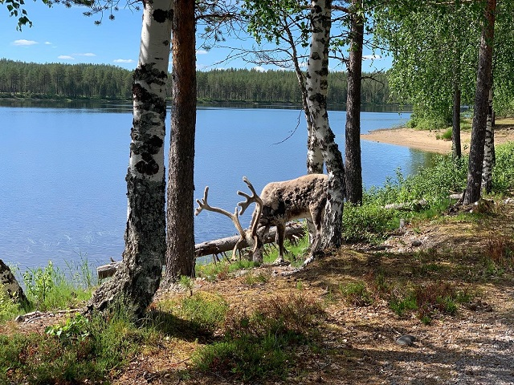
Rentier zu Besuch
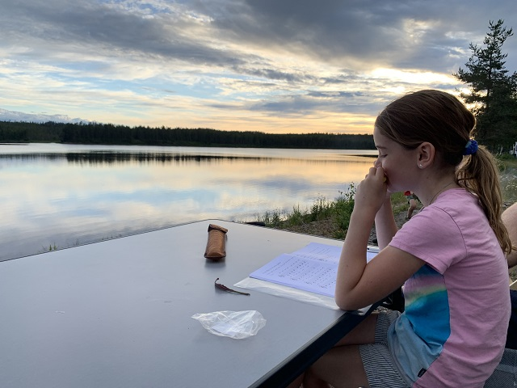
Mundharmonika am Lagerfeuer
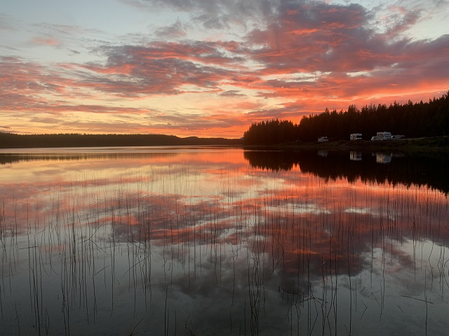
Der Himmel brennt
 Wasserschlacht!!
Wasserschlacht!!
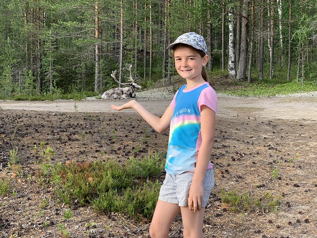
Rentier ganz nah
Das durften wir schon erleben
Norwegen
Auf einem kleinen Camping, natürlich mit See, konnten wir das Stand up Paddle nutzen, spielen und geniessen. Omi & Opi sind direkt aus der Schweiz zu uns gefahren und so haben wir mal
wieder einige Tage zusammen und konnten uns von der langen Fahrt in den hohen Norden und zurück erholen.
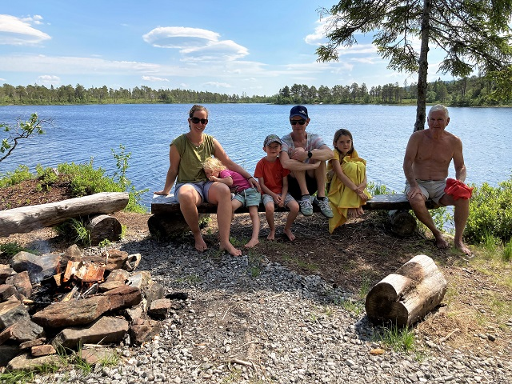
Tag am See
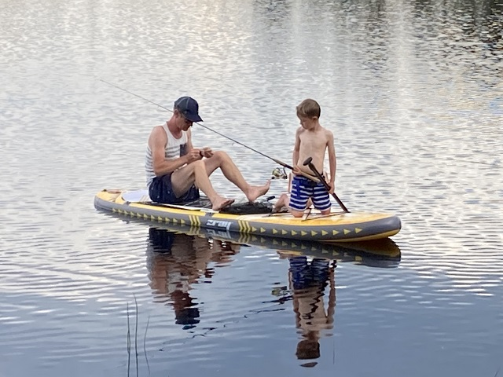
Fischen mal anders
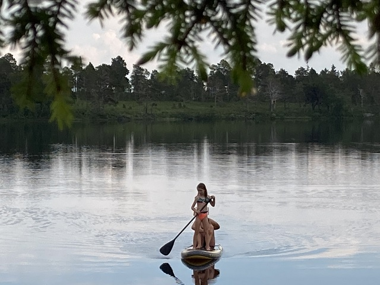
Lebensqualität pur
Nach einer aufregenden Schifffahrt auf das Festland ging es wieder südwärts. Wir gaben Gas bis Trondheim, um mal wieder sommerliche Temperaturen zu fühlen.
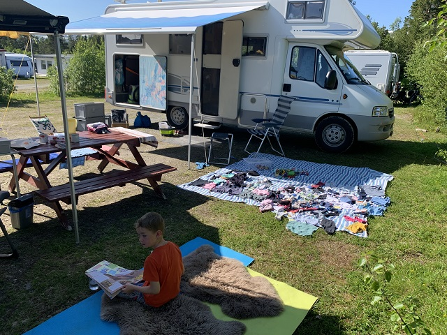
Ausspannen und waschen
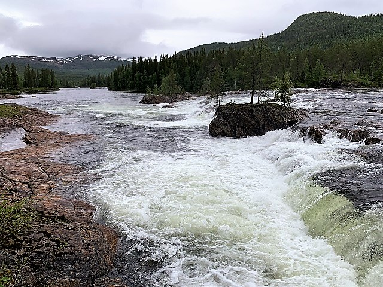
Auf dem Weg nach Süden
Nach dem Besuch in Abisko ging es gleich weiter über die Grenze nach Norwegen. Daniela's Traum vom Besuch in den Lofoten
wurde Wirklichkeit. Die unbeschreibliche Fahrt durch die Fjorde hat uns sehr an die Landschaft von Neuseeland erinnert. Hier haben wir auch die
Mitternachtssonne gesehen, Wale vom Ufer aus beobachtet, Fische gefangen und leider auch den Geschmack von Stockfischen kennengelernt.
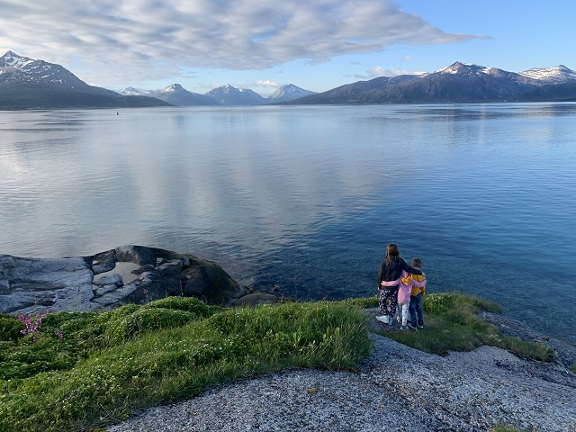
Einfach staunen
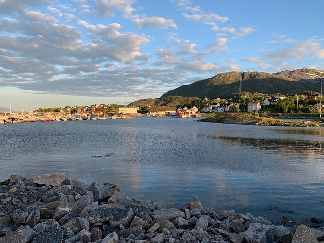
Mitternachtssonne
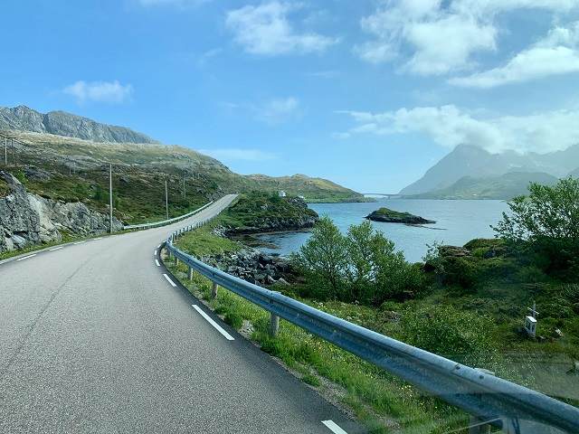
Der Weg ist das Ziel
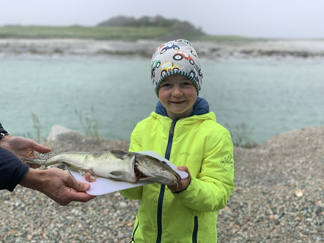
Nando's erster Fang
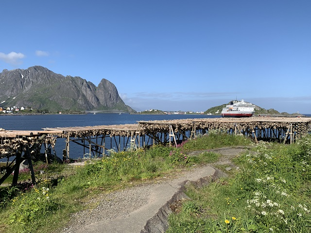
Reime mit Stockfisch
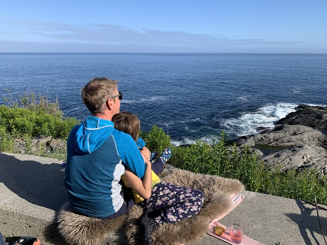
Unvergesslich
Schweden
Nach unserem Campingurlaub in Skellefteå haben wir noch zwei Tage am Strand verbracht, wieder mal in einem Häuschen geschlafen
und das schöne Wetter mit eindrücklichem Regenbogen genossen. Dann ging es zum Glück mit geflicktem Wohnmobil weiter zum Polarkreis, bis zum Abisko
Nationalpark im hohen Norden von Schweden.
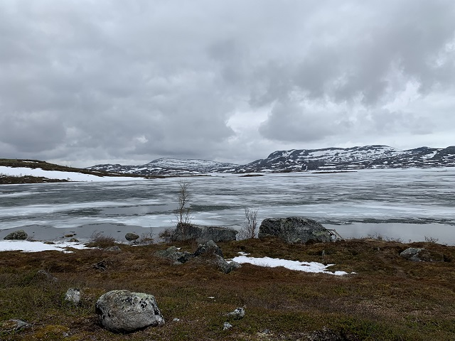
Noch immer gefroren
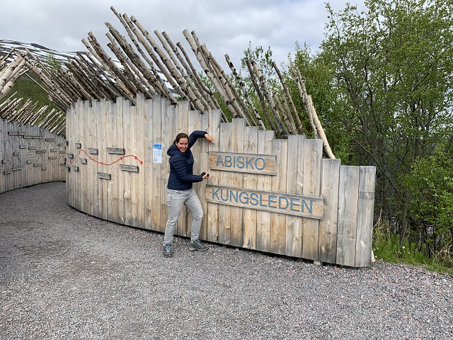
Tor zum Nationalpark
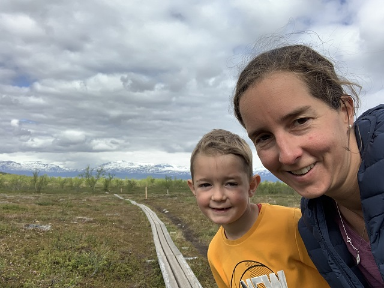
Wanderung in der Wildnis
 Top of Sweden
Top of Sweden
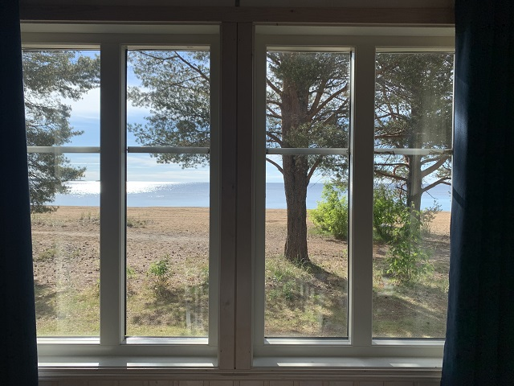
Unser Häuschen direk am Meer
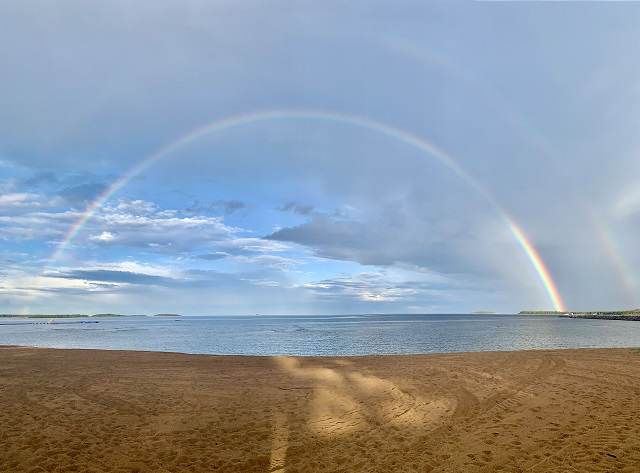
Traumhaft schön
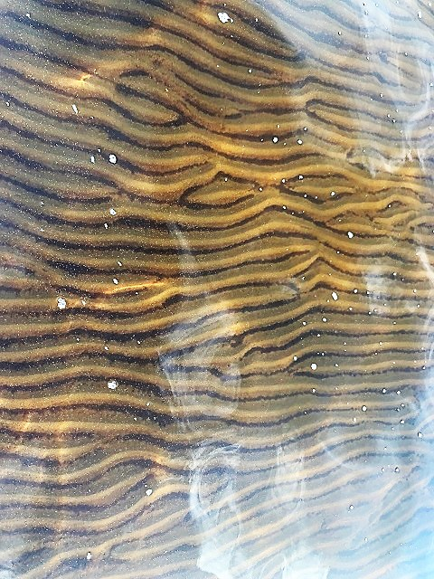
Wunderwelt Natur
Die rote Motorenlampe bremst uns für fast zwei Wochen aus. Der Fachkräftemangel ist in Schweden voll zu spüren. Deshalb warten wir laaaaaange auf einen Termin in der Garage.
Zum Glück haben wir es ins hübsche Städtchen Skellefteå an der Ostküste geschafft. Hier machen wir nun einige Tage Ferien auf dem Camping. Shoppen, Bikepark, Minigolf und einfach mal nichts planen ist auch mal okay.
Dank guter Versicherung haben wir einen Ersatzwagen erhalten und erkunden die Umgebung mit dem Bodensuri.
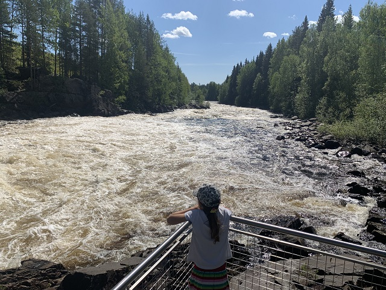
Fällfors mit viel Wasser
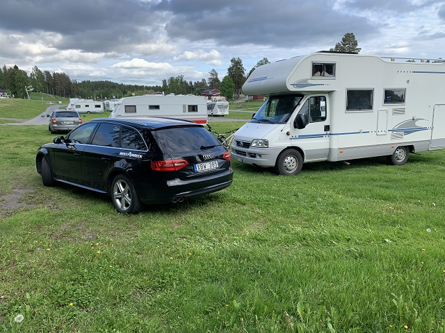
ein Fahrzeug reicht uns nicht mehr
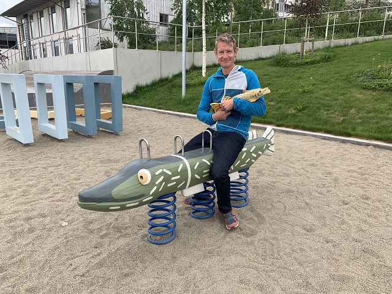
It's all about the Hecht
Auch wenn natürlich immer mal wieder heftig gestritten wird, haben sie sich doch sehr lieb.
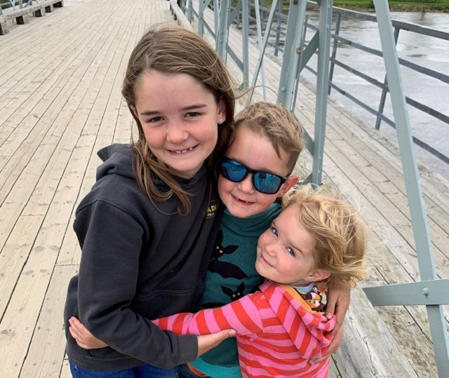
Geschwisterliebe
Übung macht den Meister - das gilt wohl auch für Fabian's Fischerkünste. Nachts um elf kam er mit zwei Hechten vom See zurück. Der Kleine hätte für uns ausgereicht. So haben wir
drei Tage Hecht in allen Variationen gegessen. Jetzt nimmt unsere Küche maximal noch 2kg Fisch auf einmal an. Wenn Fabian noch mehr fischt, muss er selbst einen Abnehmer auf dem Camping finden, so der Deal ;-).
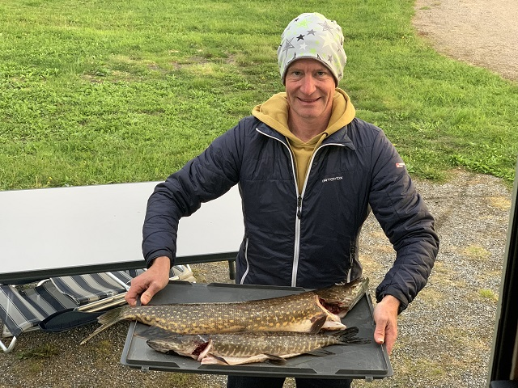
Sie werden immer grösser
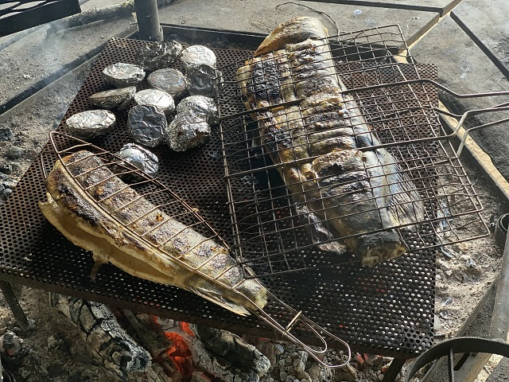
Essen für drei Tage
Nachdem wir gesehen haben, wie die berühmten Dalapferde, ein typisches schwedisches Spielzeug, hergestellt werden,
geht es wieder zurück zur Ostküste. In einem kleinen Fischerdorf waschen wir mal wieder alles und machen ein bisschen Pause.
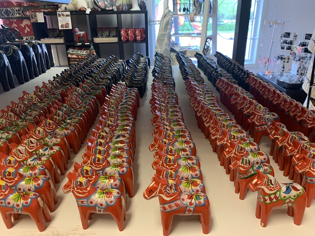
Dalapferde in Produktion
 Fäbs&Kids im Paradies
Fäbs&Kids im Paradies
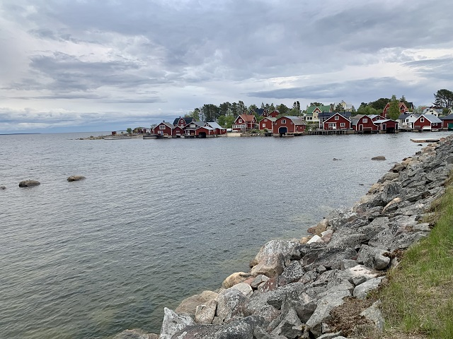
Guter Platz für Wäschestop
Kurzer Abstecher ins Inland, jetzt wissen wir, woher die rote Farbe (Falunrot) kommt.
Das Erz konserviert die Holzfassaden, die dadurch weniger schnell verwittern.
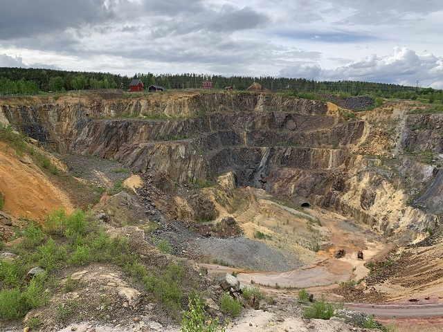
Falun Gruva
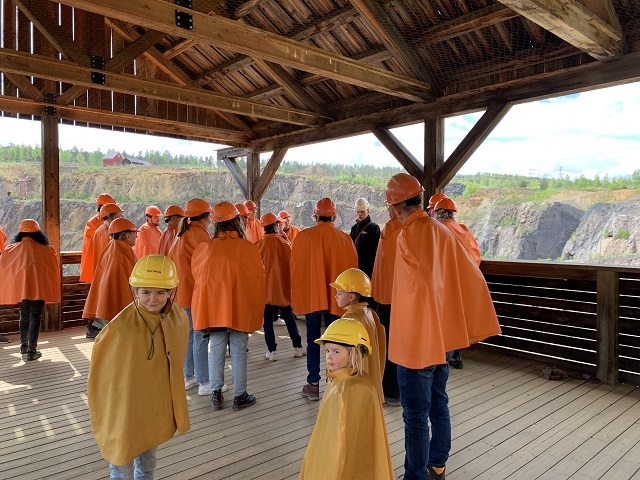
Ready für die Führung
Mal wieder Grossstadt und schlussendlich doch schönes Wetter in Stockholm. Von Kinderspielplatz über Wachwechsel im Schlosshof bis zum Kunstmuseum, haben wir viel gesehen.
Wir haben unseren Besuch, Daniela's Freundin Claudia, und das Grossstadtfeeling sehr genossen!
Skeppsholmsbron
Weiterbildung mit Claudia
Gamla Stan
Claudia zu Besuch
Wir haben es geschafft, endlich sind wir in Schweden angekommen. Nun reisen wir wieder total entschleunigt und geniessen
die Seen, Wälder und Tiere ganz nah.
Schärenküste vor Stockholm
Frischer Hecht
Hier kommen wir
 Omberg mit Blick auf Vättersee
Omberg mit Blick auf Vättersee
Velotour am Götakanal
Store Mossa Naturreservat
Nachwuchsförderung
Nachwuchsförderung zum 2.
Hauptsache füürle
Traumplatz
Nando voll im Element
Fabian im Himmel
Absolute Einsamkeit, Wälder und Seen - das ist Schweden. Fabian hat die ersten Fische gefangen, Nando hat schon ganz viel
Holz verfeuert und wir entschleunigen jeden Tag ein bisschen mehr.
Erste Bootsfahrt
Besuch im Wikingerdorf
 Auf gehts nach Schweden
Auf gehts nach Schweden
Dänemark
Der Weg nach Schweden führte uns zuerst nach Dänemark. Es stimmt wirklich, die Dänen sind super nett und immer gut gelaunt.
Auch sind sie hart im Nehmen. Bereits am morgen vor der Arbeit wird zuerst kurz im Meer gebadet, bei eisigen 10 Grad. Wir haben dann lieber einfach zugeschaut.
Das Highlight war der Tag im Legoland. Bahnen fahren und Legobauten bestaunen, das war für uns alle toll. Die letzte Station vor Schweden war Kopenhagen. Eine tolle Stadt: gemütlich, schön und mit vielen Velowegen.
Stadtbummel in Kopenhagen
Autorennen im Park
Fun im Legoland
Deutschland
Ferien während der Reise. Wir hatten Besuch von Nani, Gotti/Tante und Götti/Onkel und nahmen uns eine Auszeit in Büsum an der Nordsee.
Auch hier hatten wir unglaubliches Wetterglück. Wir geniessen unseren Besuch, den Luxus eines Hauses, den Wechsel der Gezeiten und natürlich Krabbenbrötchen.
Quatsch im Watt
Strandkörbe stehen bereit
Quatsch im Watt
Hamburg konnten wir bei sonnigem Wetter erkunden. Eine tolle Stadt! Die Hafenrundfahrt war beeindruckend, der Elbetunnel lang und
der DOM (Jahrmarkt) riesengross. Wir hatten unseren Spass!
Riesiger Frachter
Tunnel unter der Elbe durch
Zuckerschub am Jahrmarkt
Speicherstadt
Elbphilharmonie vom Wasser aus
Hafenrundfahrt
Nach tagelanger Autofahrt haben wir endlich Omi&Opi in Nürnberg getroffen. Dann genossen wir noch einige Tage in Bamberg direkt am
Mainkanal. Ein bisschen velofahren, Fähren bestaunen, Federball spielen und einfach geniessen.
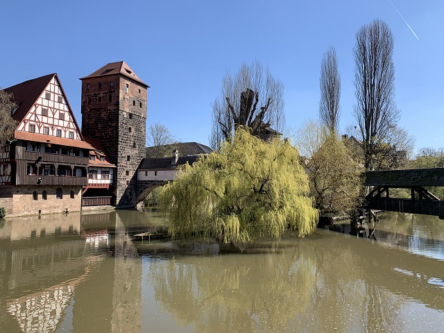
An der Pegnitz
Schaut mal da!
Endlich sind Omi und Opi da
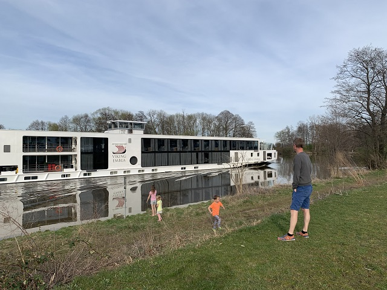
Fährbetrieb beim Stellplatz
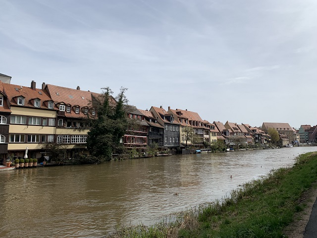
Bamberg, klein Venedig
Erste Velotour ohne Anhänger
Nach der Fähre verbrachten wir zuerst einige Tage mit Auto fahren. Zwischendurch haben wir uns aber auch kurze Pausen gegönnt.
Sealife am Gardasee
 Mal wieder ein Selfie
Mal wieder ein Selfie
Elfenweg im Pustertal
Rund um die Peleponnes
Weiter ging es rund um die Halbinsel. Endlich konnten wir den Strand geniessen und unsere dicken Jacken im Schrank lassen.
Von Tag zu Tag wurde es wärmer und zwischendurch konnten wir sogar (kurz) baden. Sändelen geht so oder so immer.
Die Schönheit dieser Gegend ist wirklich atemberaubend. Einsame Buchten, kilometerlange Sandstrände, klares Wasser, tausende Oliven-, Orangen- und Zitronenbäume und
super gastfreundliche Menschen machen Griechenland zu einem grandiosen Reiseziel. Da die Campingplätze meist noch geschlossen oder verwaist waren, schliefen wir hauptsächlich auf Stellplätzen. Das brachte uns der Natur noch näher.
Damit wir entschleunigen und einfach mal sein konnten, haben wir einige Ausläufe der Insel ausgelassen. Das tat uns allen sehr gut.
Einmal mussten wir auch wegen schneebedeckten Strassen kurz vor der Passhöhe umdrehen. Zum Glück sind wir heil zurückgekommen und konnten am nächsten Tag über eine andere
Strasse das Gebirge überqueren.
Auf der Fähre
Ab in den Norden
 Heisse Quellen
Heisse Quellen
Denker Donnerstag am Fluss
Milenas Strandkunstwerk
Entspannen
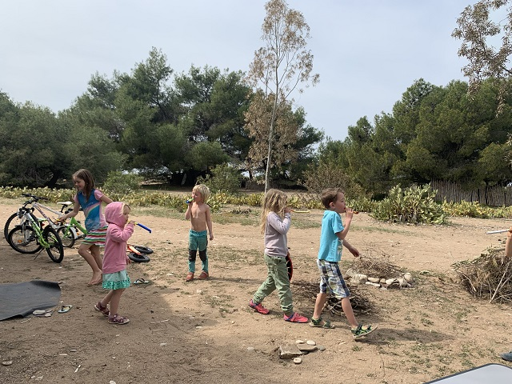
Geburtstagsparade
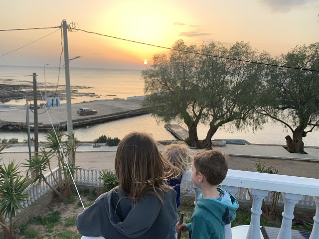
Sonnenuntergang auf der Terasse
Nur ein Lagerfeuer kann jeder
Unsere letzten Strandtage genossen wir bei Elea Beach und hier haben wir auch Milena's Geburtstag gefeiert.
Stand up Paddle
Ochsenbauchbucht
Navarino Bay
Nach einigen Nächten auf einem Stellplatz direkt am Strand mit Spielplatz, Fussballfeld und netten Menschen, sind wir weiter zur Navarino Bay gezogen.
Hier stehen wir fast alleine vor dieser wunderschönen Kulisse und bei perfektem Wetter. Deshalb schnell Stand up Paddle aufblasen und ab ins Wasser.
Die Wanderung hoch zur Burg bot dann diesen atemberaubenden Ausblick auf die Bucht.
Wäschetag
Burg von Methoni
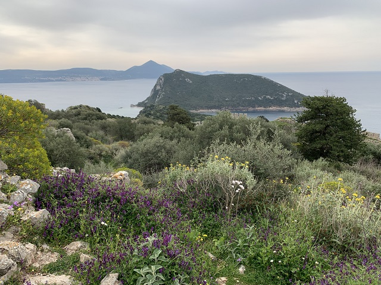
Aussicht Navarino Burg
Beach Kids
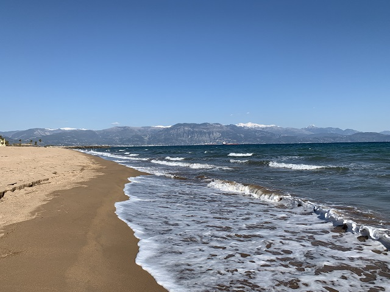
Strandauszeit in Messini
Hübsches Dorf Nafplio
 Mittag an der Sonne
Mittag an der Sonne
 Kletterpause
Kletterpause
 Sändelen vor dem Schlafengehen
Sändelen vor dem Schlafengehen
 Frisch gepresst zum Frühstück
Frisch gepresst zum Frühstück
Beeindruckend, Theater Epidauros
Golf von Korinth
Entlang der Küste haben wir den Golf von Korinth erkundigt. Die ersten Tage und Nächte waren sehr kalt.
Die Landschaft und vor Allem die eindrücklichen antiken Bauten konnten wir trotzdem sehr geniessen.